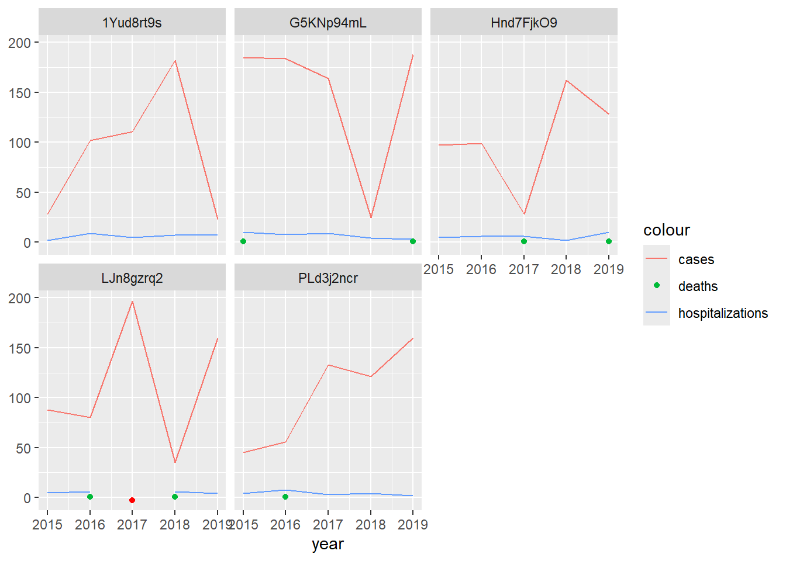

library(tidyverse)
malaria_dat <- data.frame(uid = rep(c("Hnd7FjkO9","1Yud8rt9s", "PLd3j2ncr","LJn8gzrq2",
"G5KNp94mL"), each = 5),
region = rep(c("Central", "Central", "Northern", "Southern",
NA), each = 5),
year = rep(c(2015:2019), times = 5),
cases = c(97, 99, 28, 162, 128, 28, 102, 111, 182, 23, 45, 56,
133, 121, 160, 88, 80, 197, 35, 160, 185, 184, 164,
25, 188),
hosp = c(5, 6, 6, 2, 10, 2, 9, 5, 7, 8, 4, 8, 3, 4, 2, 5, 6, NA,
6, 4, 10, 8, 9, 4, 3),
deaths = c(NA, NA, 1, NA, 1, NA, NA, NA, NA, NA, NA, 1, NA, NA,
NA, NA, 1, NA, 1, NA, 1, NA, NA, NA, 1),
pop = c(rep(c(NA, 1056, 3029, 9832, 1039), each = 5)))2 Missing Data
Objectives: In this lesson, you’ll learn how to review data for completeness, identify possible zeroes coded as NAs, and restrict data based on completeness.
Routine data typically has some missingness and, often, then some. In order to make valid comparisons across time and space, it’s important to understand when and where our data are available. Complicating the process of identifying gaps in our data, many DHIS2 instances do not provide zeroes, instead reporting them as NAs. This lesson covers methods for reviewing missing values, replacing NAs with zeroes where possible, and restricting data in order to make inferences.
2.1 Reviewing data completeness
First, we’ll revisit a toy data set of malaria cases and hospitalizations for 5 health facilities across three regions for 2015-2019. We’ll add catchment populations and malaria deaths and introduce some missingness. For this exercise, we’ll assume no population growth or loss.
If we summarize the data, we notice the year and case data are complete. The hospitalization and population data have some missingness, and the death data are almost completely missing. While it’s not obvious from summary() , there’s also missingness in the region variable, which we can see using colSums(is.na()), a count of missing observations for each variable.
summary(malaria_dat) #Review data uid region year cases
Length:25 Length:25 Min. :2015 Min. : 23.0
Class :character Class :character 1st Qu.:2016 1st Qu.: 56.0
Mode :character Mode :character Median :2017 Median :111.0
Mean :2017 Mean :111.2
3rd Qu.:2018 3rd Qu.:162.0
Max. :2019 Max. :197.0
hosp deaths pop
Min. : 2.000 Min. :1 Min. :1039
1st Qu.: 4.000 1st Qu.:1 1st Qu.:1052
Median : 5.500 Median :1 Median :2042
Mean : 5.667 Mean :1 Mean :3739
3rd Qu.: 8.000 3rd Qu.:1 3rd Qu.:4730
Max. :10.000 Max. :1 Max. :9832
NA's :1 NA's :18 NA's :5 colSums(is.na(malaria_dat)) #Review missingness counts in each column uid region year cases hosp deaths pop
0 5 0 0 1 18 5 2.2 NAs or zeroes?
As noted above, the death data are mostly NA, the hospitalization data contain an NA, and there are no zero values in the data set. Once we’ve confirmed that zeroes are stored as NAs (by asking a knowledgeable source), we need to figure out which NAs were likely reported zeroes and which non-reporting. Let’s review the data more carefully by creating time series plots for each facility. We’ll depict missing hospitalizations in red.
ggplot(malaria_dat) +
geom_point(data = . %>% filter(is.na(hosp)), aes(x = year, y = -3), color = "red") +
geom_line(aes(x = year, y = cases, color = "cases")) +
geom_line(aes(x = year, y = hosp, color = "hospitalizations")) +
geom_point(aes(x = year, y = deaths, color = "deaths")) +
ggforce::facet_wrap_paginate(.~uid) +
labs(y = NULL)Warning: Removed 18 rows containing missing values or values outside the scale range
(`geom_point()`).
If we know that hospitalization and death data are reported together, we may be able to assume that facilities actually reported zero deaths, i.e., that the data are not missing, so long as the facilities reported malaria hospitalizations that year. In our example, that would mean we set all deaths to zero except for at LJn8gzrq2 in 2017, when hospitalization and death data were both missing.
At health facilities that rarely see hospitalizations or deaths, you might assume NAs for both indicators are zeroes. However, at a facility like LJn8gzrq2, where hospitalizations are regularly recorded in low numbers, you might not. What would you do in this instance? Missing data assumptions are often a judgement call. Getting someone’s thoughts who is familiar with the context is always a good idea and can help you refine your assumptions.
In you own work, your data will likely include additional data elements. You may be able to create a rule, such as, “If the number all-cause admissions (or malaria tests) is greater than 0 in a given month, assume the number of malaria admissions is actually zero if NA.” Similarly, for outpatient data, if the number of tests administered is greater than zero but cases are NA, you may be able to assume there were zero confirmed cases. Whatever you assume, be sure to confirm your assumptions are reasonable with someone who’s familiar with the context, and state your assumptions when reporting.
2.3 Different levels of completeness in numerators and denominators
Missingness can significantly impact our findings, so it’s important to account for it before we summarize, model, or report data. One of the most common problems we encounter with missing data arises when we evaluate incidence rates. Often, facility data is missing case counts or a catchment population estimate, but not necessarily both. If we calculate a region (or district)-wide incidence rate, our estimate might be substantially off if several facilities don’t have both population estimates and case counts.
In our data set, facility Hnd7FjkO9 is missing population data. We can calculate incidence rates for Central region, both including and excluding this facility. First, we’ll subset our data to Central. Then, we’ll calculate the 5-year annualized (average) incidence rate per 1000, including 1) all facilities and 2) only facilities with complete case and population data.
malaria_dat_central = malaria_dat %>%
filter(region=="Central")
malaria_dat_central %>% #Calculate incidence using data from facilities with missing data
summarise(incidence = sum(cases, na.rm = T)/sum(pop, na.rm = T)*1000/5) #Ignore NAs incidence
1 36.36364malaria_dat_central %>% #Calculate incidence using data from facilities removing rows with missing data
filter(!is.na(cases), !is.na(pop)) %>%
summarise(incidence = sum(cases, na.rm = T)/sum(pop, na.rm = T)*1000/5) #Divide by 5 to annualize. incidence
1 16.89394If we include all facilities, the incidence rate is over 2 times higher than if we restrict to facilities with complete data. This is because in the first instance, we’ve considered all cases in the Region while only considering the population residing in one of two catchment areas, i.e., our numerator and denominator don’t cover the same areas. In the second instance, the numerator and denominator do cover the same area. It’s generally best to restrict to observations where data are complete when calculating summaries (or regression modeling). However, in our example, we’d end up removing 50% of facilities!
Before you throw out half your data, consider your alternatives. Can you use a regional population estimate that’s reported elsewhere for the denominator instead of using the sum of the facilities’ catchment populations? Do you have access to population data for Hnd7FjkO9 for a different year, perhaps 2020, that you can use to create estimates for earlier years? Is it possible that you can report cases instead of incidence rates?
2.4 Restricting data based on completeness
You may find yourself in a situation where your data is largely missing and there isn’t much you can do. When this occurs, summarizing your data or making wider inferences about epidemiological patterns may not be appropriate. While we can calculate an incidence rate for Central Region with only one facility, we probably shouldn’t. It’s possible that the missing facility may serve most of the region’s population and have different trends from the facility with complete data, leading us to misestimate incidence for the region.
It’s common to set a threshold for how much missingness you’re willing to accept. For example, many people exclude all facilities that don’t report data during at least 80% of the follow-up period. Similarly, you might not create district or regional summaries without data from at least 80% of facilities. As before, the decisions you make are judgement calls and should be informed by the specific questions you’re trying to answer and any relevant contextual information.
2.5 Practice
Exercise 1. Calculate the annual rate of malaria deaths using the population at each facility in malaria_dat. Which facility-years were you unable to calculate rates for, and why? Could you make different assumptions that would allow you to calculate rates for these years?
Exercise 2. Replace the case and hospitalization variables in your data using the following code: set.seed(0) then malaria_dat2 = malaria_dat %>% group_by(uid) %>% mutate(cases =round(rnorm(5, cur_group_id()^2*30, sd = cur_group_id()^2*10)), hosp = round(rnorm(5, mean(cases)/33, sd = sd(cases/33)))) %>% ungroup() %>% mutate(hosp = ifelse(row_number() %in% c(1,7,9,13,16,22,25), NA, hosp)). Review the new data, and create a rule for setting hospitalizations and deaths to zero. What assumptions did you make? Recode suspected zeroes as zero.
Exercise 3. You’ve discovered that the 2020 population for facility Hnd7FjkO9 is 15,000 and has been growing 2.6% annually. Calculate the population estimates for 2015 through 2019, then calculate the annual incidence rates for Central Region.